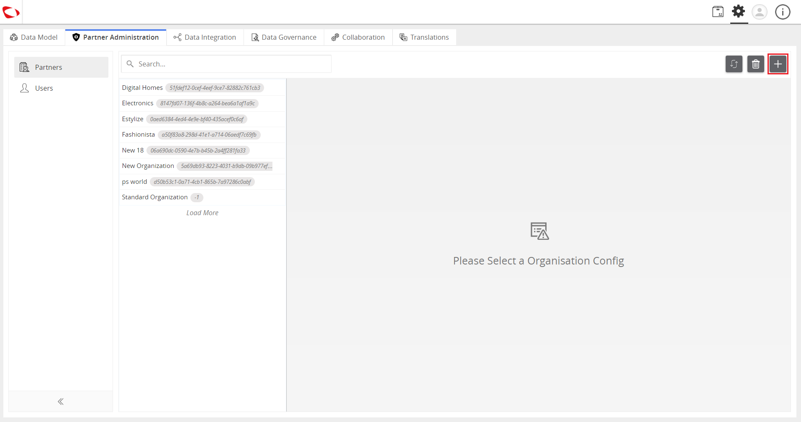
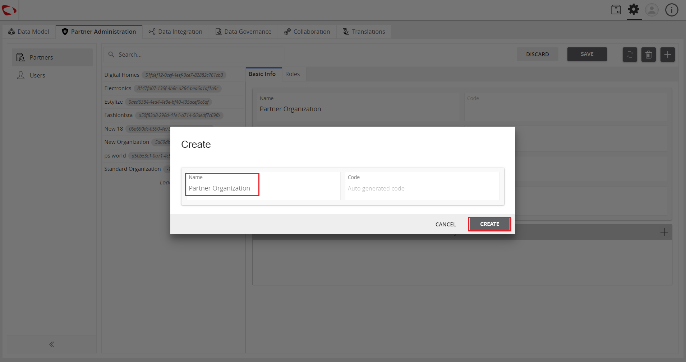
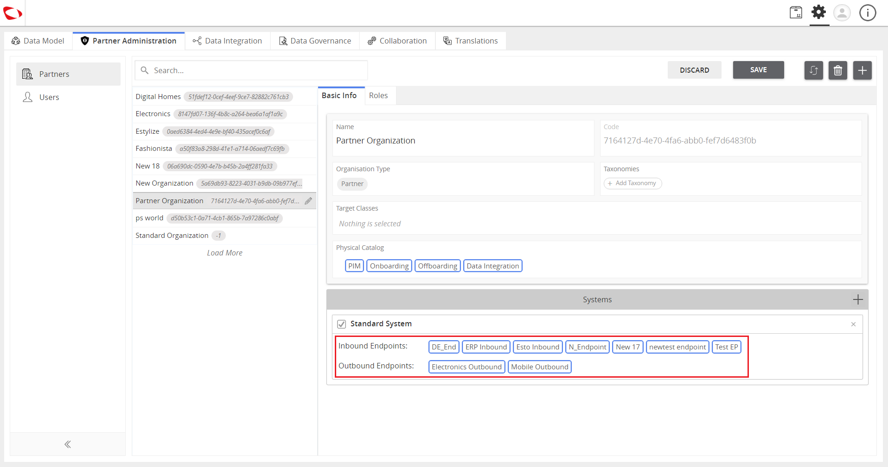

Manage System Profile
Manage System Profile is an admin feature that manages a System (Organization Profile) on the Partner Engagement Platform so that systems can be used for system integration.
| Description: |
- An administrator can create profiles for an organization that will contain the selected endpoints (both for on-board/off-board).
- A System is a profile created for an organization.
- These systems will be alloted to the organization that they have been set up for and can be customized for the organization’s specific roles.
|
| Related topics: |
|
| Application: |
An organization can have multiple end-to-end systems like CRM, ERP, etc. These systems will have their own inbound and outbound endpoints.
All these systems (along with the endpoints) can be allotted to the organization and can be further customized for the roles of that particular organization.
With this, the admin can maintain the exclusivity of endpoints for specific roles within the organization.
Example:
The CRM-concerned roles within the organization can only access the CRM inbound and outbound endpoints,
whereas the ERP-concerned roles can only access the ERP endpoints.
|
How to do: Set up System Profile
To set up system profile, follow these steps:
- Log in and go to Administration.

- Click on the Partner Administration tab.

- Click on Partners.

- Click on the “+” button to create an organization (or select an existing one).

- Enter the name and click on the Create button.

- In the Systems section, click on the “+” icon to add systems to the organization.

- Select the system to be added and click on the Apply button.

- Select the endpoints to be used in the system.
